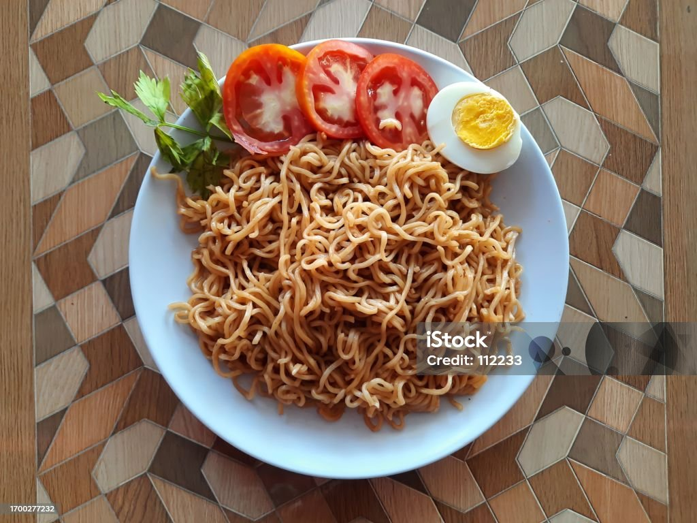

Simple Indomie Recipe
Prep time - 5 mins | Cook time - 3-5 mins | Servings - 1 plate | Difficulty - Easy

Ingredients
- One or two packets of Indomie noodles (any flavour you prefer)
- One or two eggs
- One medium onion
- One medium tomato
- One cup of water (for boiling)
- One spoon of grounded pepper
Instructions
- Chop your onions and tomato into thin slices.
- Pour one cup of water into a pot.
- Boil your egg in the water.
- After 5 minutes, remove your boiled egg.
- Put your Indomie noodles into the boiled water.
- Add the spice sachets, chopped onions, and pepper.
- Stir slightly and cover to cook for 3 minutes.
- Serve on a plate as shown above.
Chef's Tip: To make the dish richer, add extra spices and additional protein of your choice. Enjoy your meal!